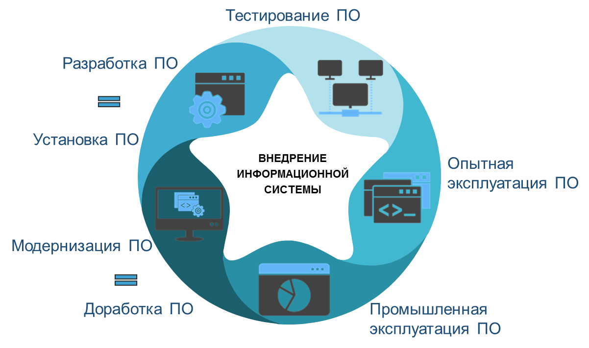

|  |
Тестирование информационных систем - деятельность по проверке программного кода и документации. Она должна заранее планироваться и систематически проводиться тестировщиками. Тестирование систем – важный этап производства ПО, направленный на детальное исследование программного кода и выявление ошибок в работе систем. Одна из главных целей тестирования – проверка соответствия работоспособности системы в целом или ее отдельных модулей ожиданиям заказчика. Тестирование ПО позволяет своевременно выявить дефекты кода, повысить надежность и отказоустойчивость системы, избежать финансовых и репутационных потерь, связанных с нестабильной работой готового решения. |
Сгенерировать случайное число